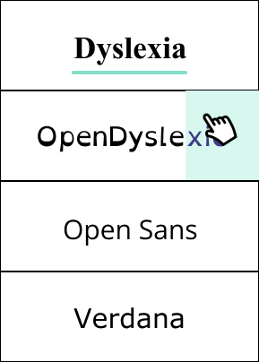
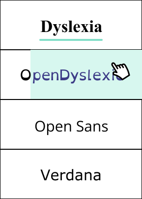
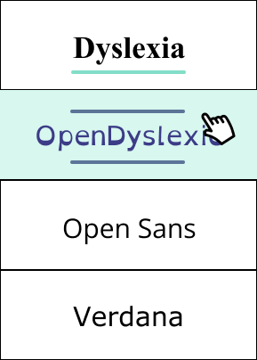
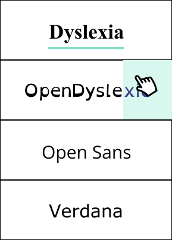
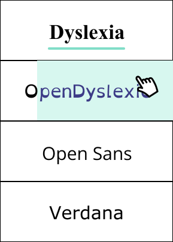
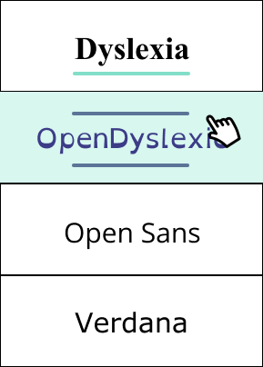

Dyslexia Main Tab
Triggers
- hover on and hover off the "Dyslexia" main tab on the menu
Rules
ON HOVER
- the thin, turquoise underline on the tab would start from the left and travel horizontally to the end of the word to the right
- the sub categories will consequentially ease in 1 second in, one sub category after another from top to bottom
- the arrow curser turns into the pointer curser
OFF HOVER
- the thin, turquoise underline on the tab would start to horizontally retract from the right end of the tab and travel to where it started from
- the sub categories will consequentially ease out 1 second in, one sub category after another from top to bottom
- the pointer curser turns into the arrow curser
Feedback
ON HOVER
- the thin, turquoise underline on the tab would start from the left and travel horizontally to the end of the word to the right
- the sub categories will consequentially ease in 1 second in, one sub category after another from top to bottom
- the arrow curser turns into the pointer curser
OFF HOVER
- the thin, turquoise underline on the tab would start to horizontally retract from the right end of the tab and travel to where it started from
- the sub categories will consequentially ease out 1 second in, one sub category after another from top to bottom
- the pointer curser turns into the arrow curser
Loops and Modes
- sub categories of menu appear on hover and sub categories of menu disappear off hover
Sub Category Fonts
Triggers
- click on and click off the sub categories of fonts after hovering on the Dyslexia tab
Rules
ON CLICK
- the box around the chosen and clicked-on font will fill in with a mint green colour
- the font is bolded to emphasise and indicate that it has been selected
OFF CLICK
- the box around the chosen and clicked-on font will unfill and return to its default state of a white background behind the font name
- the font is unbolded to emphasise and indicate that it has been deselected
Feedback
ON CLICK
- the box around the chosen and clicked-on font will fill in with a mint green colour
- the font is bolded to emphasise and indicate that it has been selected
OFF CLICK
- the box around the chosen and clicked-on font will unfill and return to its default state of a white background behind the font name
- the font is unbolded to emphasise and indicate that it has been deselected
Loops and Modes
- the default text below the menu will change fonts depending on the respective font sub catergory chosen
 




